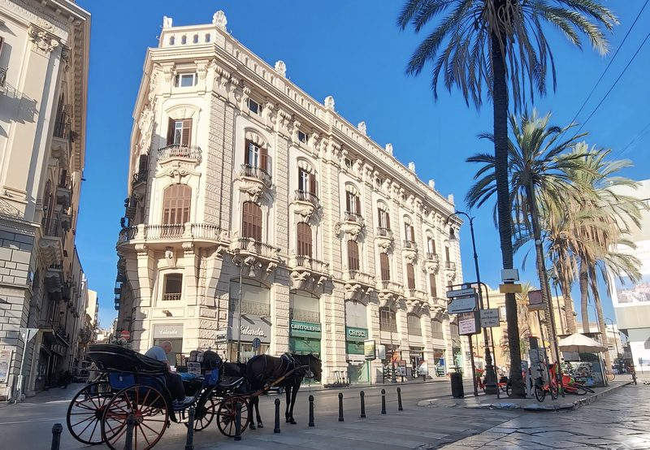

Appartamento di lusso · Palermo, Centro Storico
La Struttura
Il Moncada de Luna Exclusive Stay è un appartamento di lusso ricavato all'interno di un palazzo storico del Settecento, situato nel cuore del centro storico di Palermo. La struttura unisce la grandiosità dell'architettura aristocratica siciliana ai comfort di un soggiorno moderno, offrendo un'esperienza di viaggio autentica e raffinata.
Gli spazi sono caratterizzati da soffitti alti con affreschi originali, pavimenti in maioliche tradizionali e arredi d'epoca selezionati con cura. Ogni dettaglio è stato pensato per garantire il massimo del comfort senza rinunciare all'eleganza e all'atmosfera storica.
La posizione è strategica: a pochi passi dalla Cattedrale di Palermo, dal Teatro Massimo e dai principali mercati storici come la Vucciria e il Ballarò. Un punto di partenza ideale per esplorare la città a piedi.
Cosa Troverai
Prenota Direttamente
Verifica le date disponibili e prenota il tuo soggiorno di lusso nel centro storico di Palermo direttamente sul nostro portale ufficiale.
Verifica disponibilitàDomande Frequenti